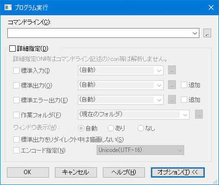
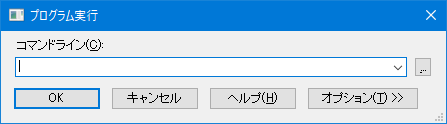

秀丸エディタでは、メニューの「その他→プログラム実行」から、外部プログラムの実行が可能です。
編集しているhtmlファイルをwebブラウザで開いたり等、開いているファイルを指定して別のアプリケーションを呼び出すこともできます。
「プログラム実行」ダイアログにある「オプション」を展開すると表示される「詳細設定」のON/OFFにより、多少動作が異なります。
(「オプション」や「詳細設定」は、秀丸エディタVer.8.00から追加)

画像は、「オプション」を展開した状態です。
「オプション」を閉じてしまうと、「詳細設定」のON/OFF状態が確認できないので、注意が必要です。

【１】共通の注意点
【２】プログラム実行の方法 その１ 詳細設定 OFFの場合 or 秀丸エディタVer.8未満
【３】プログラム実行の方法 その２ 詳細設定 ONの場合
【４】補足
コマンドラインに指定する文字列について
文字列内に
の文字がある場合、対象の内容に置換されてプログラムに引き渡されます。 (大文字小文字の区別はありません)
特に、パーセントエンコード/URLエンコード を含む文字列を指定する場合は、注意が必要です。
"C:\Program Files\Hidemaru\HIDEMARU.TXT" を秀丸エディタで開いている状態では、以下の内容に置換されます。
開いているファイルのフルパス
C:\Program Files\Hidemaru\HIDEMARU.TXT開いているファイルのフォルダ名
C:\Program Files\Hidemaru開いているファイルのファイル名
HIDEMARU.TXT開いているファイルのファイル名から拡張子を除いたもの
HIDEMARUcolumn と同じくタブ文字も1文字とカウントします。
例えば、以下の Vbscript を “argv.vbs” というファイル名で保存し、 "%8C %B4 %88 %F6 %8B %86 %96 %BE" という文字列を引数として wscript.exe で実行してみます。
Option Explicit
Dim WshArgs
Dim Argv
Dim i
Argv = ""
'引数の取得
Set WshArgs = WScript.Arguments
For i = 0 to WshArgs.Count - 1
Argv = Argv & cstr(i) & " -->" & WshArgs(I) & "<--" & vbcrlf
Next
set WshArgs = Nothing
Wscript.echo Argv
Wscript.quitコマンドラインに指定する文字列。(“argv.vbs” は、スクリプトを保存した場所に合わせて、修正してください)
wscript.exe "argv.vbs" %8C %B4 %88 %F6 %8B %86 %96 %BE出力結果
---------------------------
Windows Script Host
---------------------------
0 -->%8C<--
1 -->HIDEMARU.TXT4<--
2 -->%88<--
3 -->C:\Program<--
4 -->Files\Hidemaru\HIDEMARU.TXT6<--
5 -->%8B<--
6 -->%86<--
7 -->%96<--
8 -->HIDEMARU.TXTE<--
---------------------------
OK
---------------------------"%8C %B4 %88 %F6 %8B %86 %96 %BE" に含まれる、"%B"、"%F"が、ファイル名、フルパスに変換されて、プログラムに引き渡されています。さらに、フルパスの場合、スペースが含まれている為、引数の数も違ってしまっています。
標準出力でNULL文字が含まれる場合は、「その他→動作環境→ファイル→エンコード2」 にある以下の設定に影響されます。
秀丸エディタ Ver.8未満か、「詳細設定」がチェックされていない状態で実行する場合の動作になります。
「その他→動作環境→その他のコマンド→プログラム実行」 にある「標準エラー出力も出力する」の設定が影響します。
コマンドラインを使ってリダイレクトの指定が可能で、編集中のファイルを標準入力に指定したり、標準出力を指定したファイルに出力できます。
標準入力
標準出力
なにも指定しない場合は、新規の秀丸エディタを開き、そこに出力されます。
範囲選択は行選択である事が前提です。 BOX選択では、選択範囲を標準入力へ送ることはできますが、">con"で正確に置換する事は出来ません。
"<con"を指定すると、選択範囲内の内容をShift_JISに変換して標準入力へ送ります。
">con"を指定すると、標準出力はShift_JISである事を前提にしています。
"<ファル名"の場合は、保存しているエンコードのまま、標準入力に送ります。
「アウトプット枠」への出力はできません。
詳細を設定してプログラムの実行か可能です。有効にする場合は、チェックをONにして設定します。各項目のチェックがOFFの場合は、設定が無効になります。
コマンドラインに、「<」や「>」を使ったリダイレクトの指定はできません。以下の設定を使用し、リダイレクトを指定します。
標準入力
標準入力を設定します。以下の設定が可能です。「指定したファイル」は「…」ボタンを使い、指定できます。
標準出力
標準出力を設定します。以下の設定が可能です。「指定したファイル」は「…」ボタンを使い、指定できます。ファイルを指定し「追加」をチェックした場合は、指定したファイルに標準出力の内容を追加します。
「アウトプット枠」は、Windows 98/Meでは使用できません。
「挿入」を使えば、範囲選択をしていなくても、カーソル位置に標準出力を挿入できます。
標準エラー出力
標準エラー出力を設定します。以下の設定が可能です。「指定したファイル」は「…」ボタンを使い、指定できます。ファイルを指定し「追加」をチェックした場合は、指定したファイルに標準出力の内容を追加します。
作業フォルダ
コマンドラインで実行するファイルのカレントフォルダを指定します。「指定したフォルダ」は「…」ボタンを使い、指定できます。
ウィンドウ表示
コマンドラインで実行するプログラムの表示状態を設定します。実行するアプリケーションによっては、指定通りにならない場合があります。
標準出をリダイレクト中は描画しない
有効にすると、実行スピードが上がる事もあります。
エンコードを指定
標準入出力のエンコードを指定します。OFFの場合は、Shift_JISに変換されます。